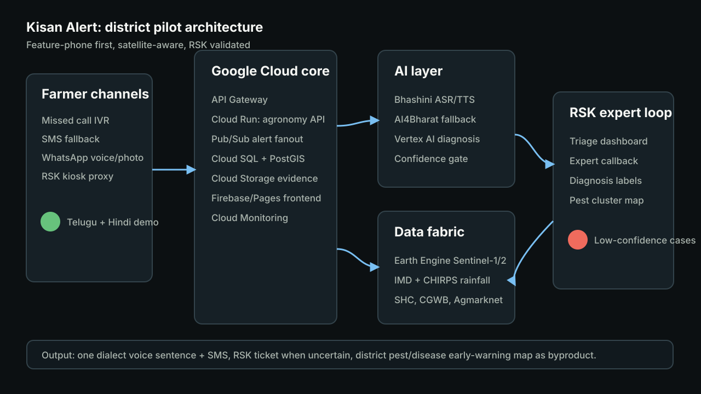

Missed call, IVR, SMS and WhatsApp voice
No app dependency. A farmer can call, use a neighbor's smartphone, or ask an RSK operator to log the case.
Code for Communities · Track 4
A voice-and-SMS platform for small farmers that recommends crop portfolios, detects monsoon dry-spell risk, and routes uncertain crop-health cases to Rythu Seva Kendras with plot evidence attached.
Selected solution
No app dependency. A farmer can call, use a neighbor's smartphone, or ask an RSK operator to log the case.
Ranks safe, balanced and high-return crops using soil, satellite, rainfall, groundwater and market signals.
Low-confidence photo/voice cases go to RSK staff with plot history, then return as voice advice and training labels.
Working prototype
Demo district: Anantapuramu-style dryland block. Farmer: Raju, 2 acres, low nitrogen, deep groundwater, red gram versus maize versus paddy decision.
Missed-call IVR
Farmer: Ee varsham lo ye pantalu veyali?
Kisan Alert: Press call back to generate plot-specific advice.
Advice summary will appear here for 2G and feature-phone users.
Monsoon radar sentinel
Smart crop engine
Advisory and dry-spell alert
No effective rain is forecast for 7 days. Delay sowing until the next 10 mm rain event and save about Rs 3,800 in seed risk.
RSK human-in-the-loop
AI confidence 42%. Cannot separate nutrient stress from early pest damage.
Possible early warning near Kothapalli and Ramapuram within 5 km.
Google Cloud deployable architecture

Exotel/Twilio missed call, IVR, SMS, WhatsApp voice, and RSK kiosk.
Bhashini/AI4Bharat ASR/TTS, Vertex AI/Cloud Run scoring, confidence-gated diagnosis.
Soil Health Card, IMD/CHIRPS, Sentinel-1/2 via Earth Engine, CGWB, Agmarknet, MSP.
Cloud SQL/PostGIS, Pub/Sub alerts, Firebase Hosting/GitHub Pages, Cloud Monitoring.
Production implementation
Load village boundaries, Soil Health Card records, crop calendars, RSK roster, IMD/CHIRPS history and Agmarknet/MSP baselines.
Connect Exotel/Twilio missed-call IVR, SMS templates, Bhashini/AI4Bharat ASR/TTS and dialect phrase dictionaries.
Generate village/plot wetness, NDVI/NDWI and rainfall anomaly features from Sentinel-1, Sentinel-2 and CHIRPS.
Train RSK users, start confidence-gated tickets, track callback completion and publish district pest/stress heatmaps.
Deployment package
{kind=link}